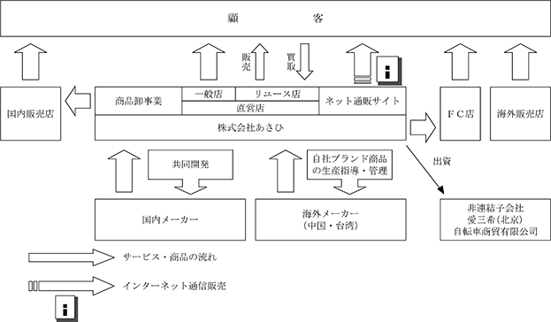

(注) １．当社は、連結財務諸表を作成しておりませんので、「連結会計年度に係る主要な経営指標等の推移」については記載しておりません。
２．持分法を適用した場合の投資利益については、関連会社がないため記載しておりません。
３．潜在株式調整後１株当たり当期純利益については、潜在株式が存在していないため、記載しておりません。
４．従業員数は、就業人員数を表示しております。なお、( )内は、外書きで臨時雇用者の年間の平均人員を記載しており、１人当たり１日８時間換算にて算出したものであります。
５．最高株価及び最低株価は、2022年４月４日より東京証券取引所プライム市場におけるものであり、それ以前については東京証券取引所市場第一部におけるものであります。
６．「収益認識に関する会計基準」(企業会計基準第29号 2020年３月31日)等を第48期の期首から適用しており、第48期以降に係る主要な経営指標等については、当該会計基準等を適用した後の指標等となっております。
７．当社は、2014年６月19日より「役員報酬BIP信託」を導入しており、当該信託が所有する当社株式を自己株式として処理しております。これに伴い、１株当たり当期純利益の算定上、控除した当該自己株式の期中平均株式数は第45期は152,206株、第46期は161,590株、第47期は137,261株、第48期は126,070株、第49期は126,070株であり、１株当たり純資産額の算定上、控除した当該自己株式数は第45期は161,590株、第46期は161,590株、第47期は126,070株、第48期は126,070株、第49期は126,070株であります。
当社の前身は、代表取締役社長下田佳史の祖父である下田順次が1949年４月旧本社所在地において、子供用玩具（すべり台、歩行器等）の製造・卸・小売を目的として旭玩具製作所を創業したことに始まります。その後、子供用自転車の卸売業や玩具小売業などを経て、1975年４月大阪府門真市に、一般ユーザーを対象とした自転車専門店をオープンし、同年５月株式会社として設立いたしました。
当社グループ（当社及び当社の関係会社）は、当社及び非連結子会社（愛三希（北京）自転車商貿有限公司）の計２社で構成されており、店舗において自転車及びパーツ・アクセサリー等の関連商品の販売、各種整備及び修理等の付帯サービスの提供を行なっております。
当社は、当事業年度末現在、北海道・東北・関東・甲信越・中部・近畿・中国・四国・九州に515店舗の直営店を運営している他、当社直営店ノウハウをもとに中部、近畿、中国及び九州に18店舗のフランチャイズ(ＦＣ)店を展開しております。子会社は、中国北京市に置いております。
インターネット通信販売では、「公式オンラインストア」に加え、「Yahoo!店」と「楽天市場店」を展開しております。また、リユース店では、自転車の買取・販売も行なっております。
商品については、当社が企画開発し、中国や台湾の海外メーカーにて生産した自社ブランド商品に加え、国内及び海外の自転車メーカー等の他社ブランド商品、メーカーとの共同開発商品を取り扱っております。
また、商品卸事業では、国内販売店に対し、自社ブランド商品だけでなく、当社が日本総販売代理権を所有する自転車及びパーツ・アクセサリーを販売しております。
なお、当社の事業は、単一セグメントであるため、セグメント別の記載を省略しております。
具体的な取扱品目は、以下のとおりであります。
事業の系統図を示すと以下のとおりであります。 （2024年２月20日現在）

該当事項はありません。
2024年２月20日現在
(注) １．従業員数は就業人員数であります。
２．( )内は、外書きで臨時雇用者の年間の平均人員を記載しており、１人当たり１日８時間換算にて算出したものであります。
３．平均年間給与は、賞与及び基準外賃金を含んでおります。
４．当社の事業は、単一セグメントであるため、セグメント情報の記載を省略しております。
労働組合は結成されておりませんが、労使関係は円満に推移しております。
(注)１．「女性の職業生活における活躍の推進に関する法律」（平成27年法律第64号）の規定に基づき算出したも
のであります。
(注)２．「育児休業、介護休業等育児又は家族介護を行う労働者の福祉に関する法律」（平成３年法律第76号）の
規定に基づき、「育児休業、介護休業等育児又は家族介護を行なう労働者の福祉に関する法律施行規則」（平成３年労働省令第25号）第71条の４第１号における育児休業等の取得割合を算出したものであります。